Description
-
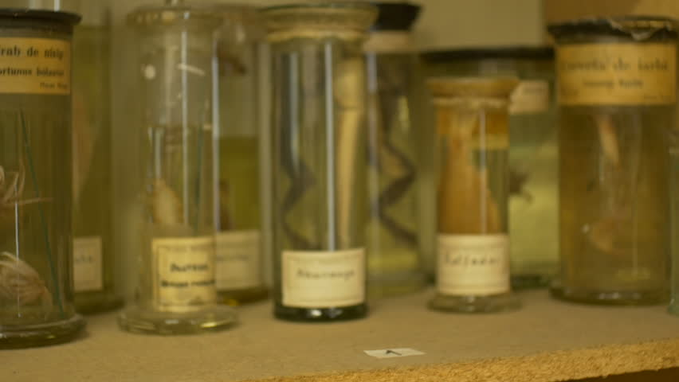
COMP SCI 300: Programming II
(If you are reading this, you are probably considering majoring in CS. Let me tell you something: If you are chossing between CS 200 and CS 220, take 220 if you don't have much experience in programming. I hate CS 200.) CS 300 is the second course of the intro-to-cs series at UW-Madison. Introduces Object-Oriented Programming and basic data structures including list, stack, queue and BST. Also covers introduction to complexity analysis.
-
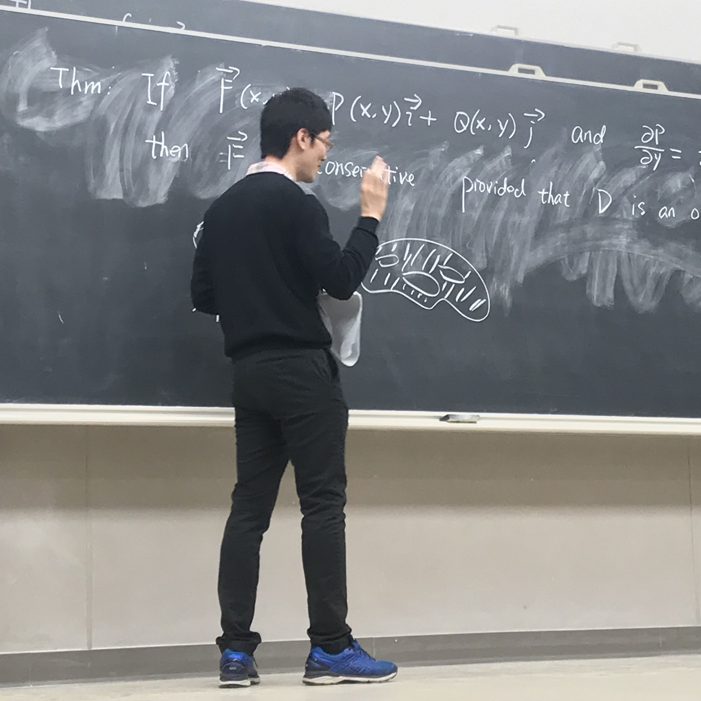
MATH 234: Multivariate Calculus
The third course of the calculus series at UW-Madison. If you are interested in majoring in math, try to take MATH 375&376 instead as those two courses satisfy the prerequisites for way more upper-level courses than MATH 234&340 combined do (They are definitely more challenging though). Topics covered calculus on parameterized curves, derivatives of functions of several variables, multiple integrals, vector calculus. The first two exams were pretty easy but be careful not to fall for the final.
-
STAT 327: Introduction to Data Analysis with R
This course is now STAT 303-305. It's a normal 3-credit class but divided into three parts and you can take any of those three courses. I consider it as more of an "Intro to R" than an "Intro to Data Analysis" class. Take a look at this before taking this class. ’Nuff said, good luck #iykyk.
-
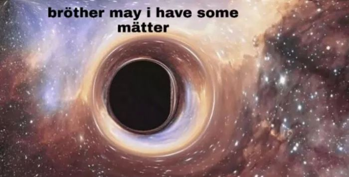
ASTRON 103: The Evolving Universe
3-credit physical sciences class. ASTRON 104 is an alternative, which focuses on the solar system. Covers pretty standard "intro to astronomy" stuff. It's easy to get an AB, but you need to put some efforts into this class for an A. Things get hard after the second midterm so embrace yourself.
-

HISTORY 160: Asian American History: Movement and Dislocation
4 credit class that satisfies both ethnic studies and humanities. Review sessions are super useful as the professor literally gives out answers and all you need to do is to memorize them. I took it with Cindy Cheng, she was really nice and was willing to help students out. This class introduces you to a lot of stories of early asian immigrants. Workload is a little bit heavy (about 30 pages of reading every week) but it was worth it as I learned a lot.
-
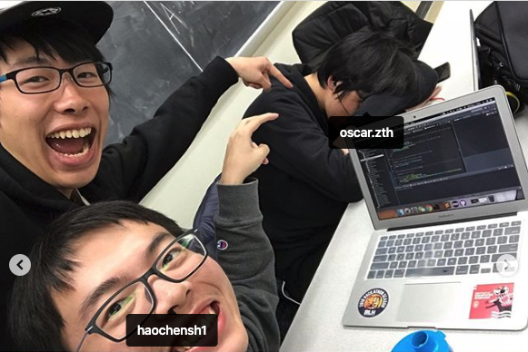
COMP SCI 400: Programming III
The final course of the Intro-to-cs series. Contains two team projects so get yourself some good teammates or it will be a nightmare (idk cuz my teammates carried me :P). Covers a bunch of stuff that you will forget in two weeks after the final. The best takeaway IMO is perhaps the practical experience of using git off the main branch.
- 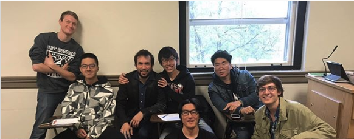
- 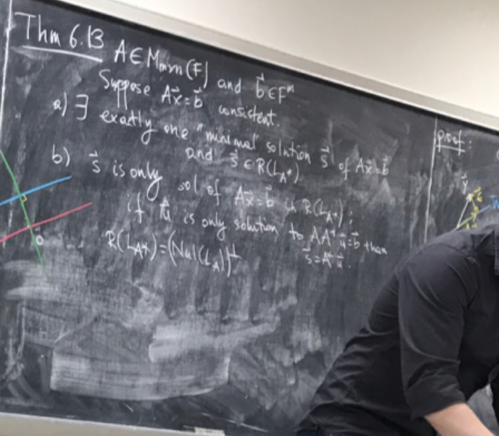
- 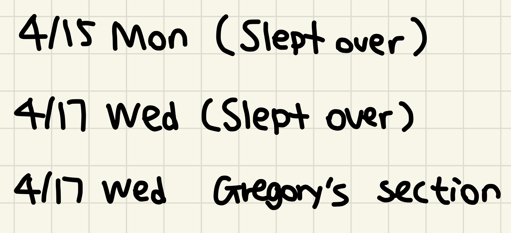
-

ESL 118: Academic Writing II
I got assigned to ESL 117 at first and was reassigned to ESL 118 after the placement test in class. For the placement test, I feel that the structure of the essay is more important than finishing the essay. I planned to write a standard 5-paragraph essay but only had the time to finish the first three, so I wrapped up the conclusion paragraph in time and wrote down how I planned to finished the second last paragraph. This class is roughly divided into three parts: SRP, GRP, and IRP. Those are basically 6-page-long papers. It is a class that takes a lot of time to get a good grade (the grade really depends on the instructor). DO NOT PROCRASTINATE ON THE PAPERS!
-
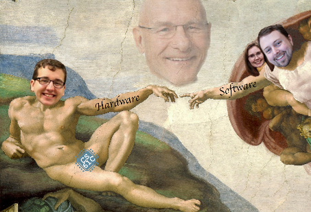
CS 61C @ Berkeley: Great Ideas in Computer Architecture (Machine Structures)
It was all fun and games until the exams. Being a Berkeley class means it's good but hella difficult. Exams are 3 hours long (Ughhhh I hated that). The peers had big brains and were willing to help each other out, but the peer pressure was kind of depressing. Piazza was used a lot more than that in UW-Madison. Topics covered basic C, assembly, pipelined processors, caches, and parallelism. As far as I understand, the first half of CS 61C is like CS 354, and the second half is a little bit of CS 537 and CS 552 combined.
-
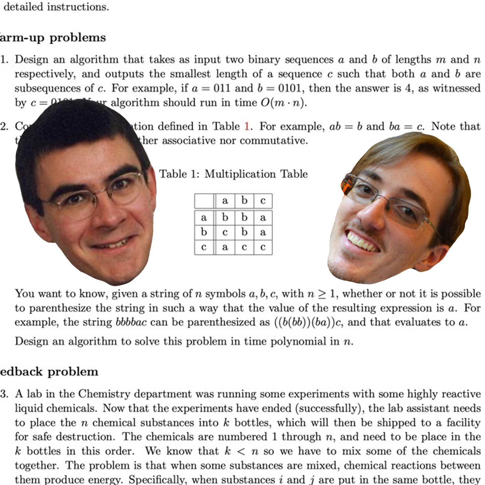
COMP SCI 577: Introduction to Algorithms
Legends say that this class is the most challenging class among undergraduate cs classes and Dieter's section is the hardest one. That being said, the takeaway is HUGE. I would strongly recommend taking it with Dieter if you have the chance (he will be teaching again in fall 2020). Dieter is really nice and he has a set of notes that is of huge help. Exam averages are at about 60% and getting a 70% usually guarantees an A in his section. Topics covered D&C, DP, Greed, Network Flow and Computational Intractability. This class lays the foundation for coding interviews, so I would suggest taking this class ASAP (and grinding Leetcode problems) if you want to get a summer internship.
-
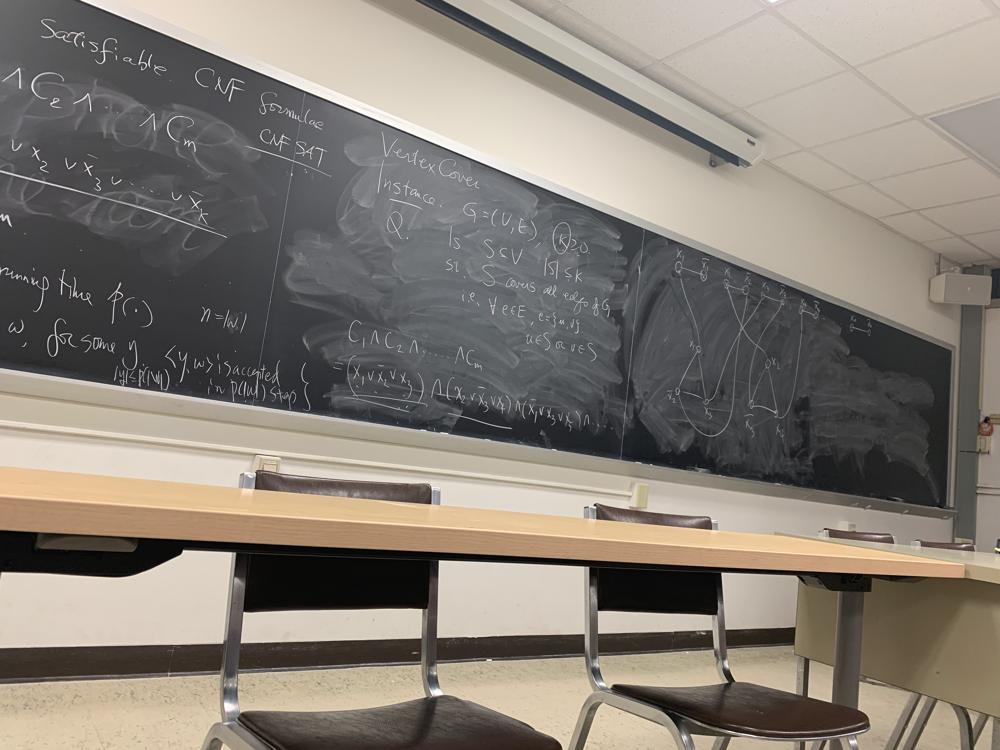
COMP SCI 520: Introduction to the Theory of Computation
Amos Ron once said, "Y'all should take 577 instead. Later in life you will use what you learn in 577 on a daily basis, but you will not use what you learn in 520 ever again." Seriously though, if you are not that into theory/compiler/PL, just take 577 instead. To be honest, although I passed the class with a descent grade, I feel like I was being "知其然而不知其所以然" almost the whole time. CS302@UVirginia, CS172@Berkeley and CS154@Stanford have a lot of practice problems that are of the same level of difficulty, and they post their slides online. Topics covered automata theory, formal languages, computability, undecidability and computational complexity. This is the class that makes "computer sciences" a hard science.
-
COMP SCI 540: Introduction to Artificial Intelligence
Everyone is doing AI these days, and this class is a great "intro to AI" class, but it doesn't really cover much about the most popular topics of today's AI such as CNN, RNN and deep learning. Would recommend taking Andrew Ng's deep learning specialization on Coursera instead if you have the motivation. If you are taking this class though, embrace yourself for a lot of quizzes related to science fictions. The only one I could do was to tell Data and Lore (from Star Trek) apart. Topics covered some basics like search, game playing, (un)supervised learning, constraint satisfaction problem, SVM, neural nets, basic probability theory, bayesian nets, speech recognition and computer vision. Again, certain amounts of in-depth knowledge were covered but they were not in the test, so don't worry too much about it if you feel lost in class.
- 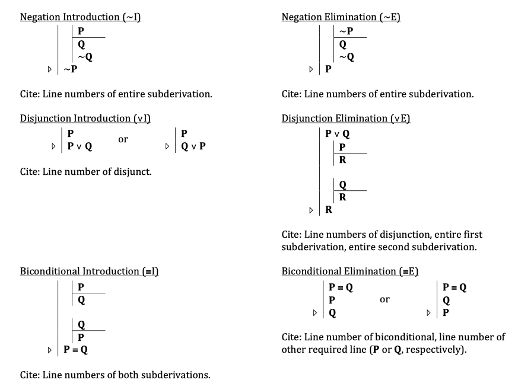
- 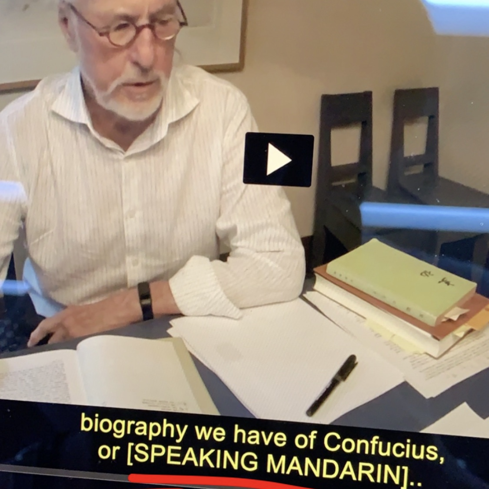
-
MUSIC 113: Clap for Credits Music in Performance
1 credit humanities class. Show up once per week, get an A. Note that this class can be repeated for credit for 3 times. All you gotta do is to sit there, listen to music, and give a round of applause when the performance ends. You also have to do after-class quizzes but they are hella easy.
-

BIO 141 @ UWC: Heredity
Can be transferred back as a 3-credit bio class. $789 for an international student is a good deal IMO. This class should be an easy A for you if you had taken biology in a Chinese high school, but the workload will be huge if you didn't pay attention in high school (which was my case). That being said, the course can be transferred back as long as you get a C (72%-78%), so 3 hours a week should meet the minimum requirements. Would recommend to anyone who hates bio and doesn't have anything to do during the winter break.
- 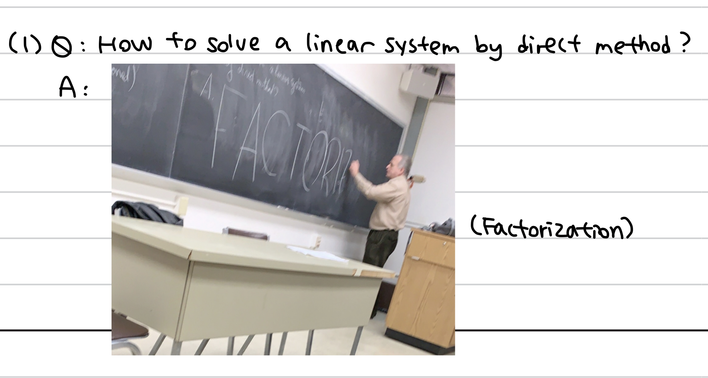
-